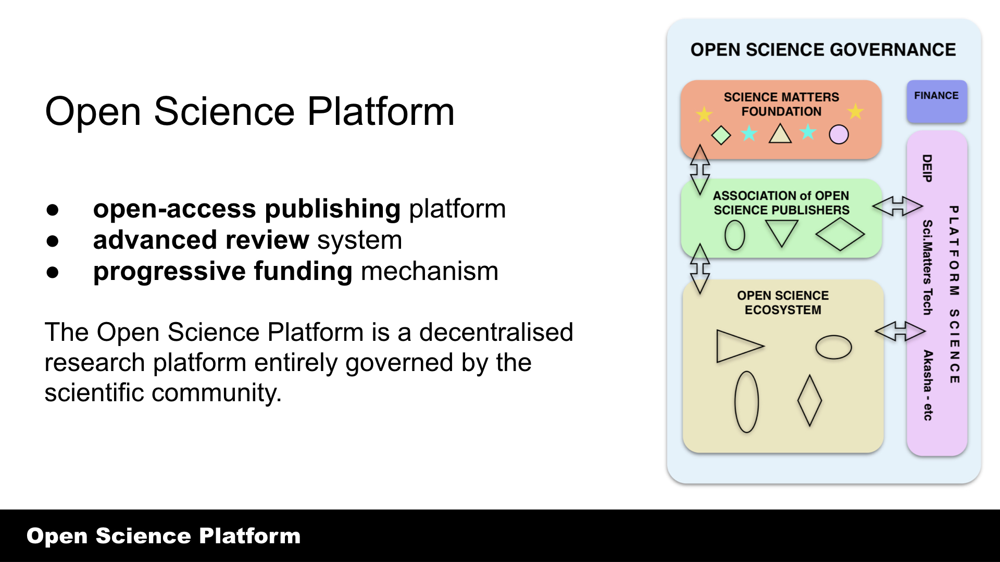

The Open Science Group is a not-for-profit and open membership organisation working towards creating new ways for scientists to reshape the way they are funded and incentivised to create open science.

The purpose of science is to create knowledge for the benefit of humanity. A key pillar of the free and open sharing of scientific knowledge across disciplines and across domains. The Open Science Group’s remit is to further these aims by facilitating the widest dissemination of scientific knowledge possible.
The Open Science Group is a not-for-profit and open member organisation, with the purpose of exploring ways in which the wider community of scientists can come together to express and make decisions aligned with open science principles.
As with any activity, the way funding is allocated is central to the effectiveness of the project. This is particularly the case with science in which the product being produced (knowledge) is intangible and hard to price.
The scientific method is about to be applied to the peer review process for the first time since the custom evolved in the 18th-century and did not become commonplace until the mid-20th-century.